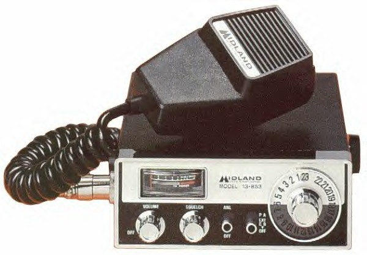

The Most Popular Page
on
www.ConvoyTM.com
CB & Trucker Links
Local Links in Northeastern Pennsylvania
NEW LINKS:
News: (6/12/2018) Removed Dead links and Added a Few
- 7 New CB Sales Links!
- NETTS (Truck Driving)
- Truckingjobs.com
- Fortis Insitute (Truck Driving)
- Calex Logisitics